20.26 GUARDIAN: Guarded Expressions in Practice
Computer algebra systems typically drop some degenerate cases when evaluating
expressions, e.g., x∕x becomes 1 dropping the case x = 0. We claim that it is feasible in
practice to compute also the degenerate cases yielding guarded expressions. We work
over real closed fields but our ideas about handling guarded expression can
be easily transferred to other situations. Using formulas as guards provides a
powerful tool for heuristically reducing the combinatorial explosion of cases:
equivalent, redundant, tautological, and contradictive cases can be detected
by simplification and quantifier elimination. Our approach allows to simplify
the expressions on the basis of simplification knowledge on the logical side.
The method described in this paper is implemented in the REDUCE package
GUARDIAN.
Authors: Andreas Dolzmann and Thomas Sturm.
20.26.1 Introduction
It is meanwhile a well-known fact that evaluations obtained with the interactive use of
computer algebra systems (CAS) are not entirely correct in general. Typically, some
degenerate cases are dropped. Consider for instance the evaluation
which is correct only if x≠0. The problem here is that CAS consider variables to be
transcendental elements. The user, in contrast, has in mind variables in the sense
of logic. In other words: The user does not think of rational functions but of
terms.
Next consider the valid expression
It is meaningless over the reals. CAS often offer no choice than to interprete surds over
the complex numbers even if they distinguish between a real and a complex
mode.
Corless and Jeffrey [CJ92] have examined the behavior of a number of CAS with such
input data. They come to the conclusion that simultaneous computation of all cases is
exemplary but not feasible due to the combinatorial explosion of cases to be considered.
Therefore, they suggest to ignore the degenerate cases but to provide the assumptions to
the user on request. We claim, in contrast, that it is in fact feasible to compute all possible
cases.
Our setting is as follows: Expressions are evaluated to guarded expressions consisting of
possibly several conventional expressions guarded by quantifier-free formulas. For the
above examples, we would obtain
|
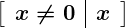 , 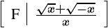 .
|
As the second example illustrates, we are working in ordered fields, more precisely in
real closed fields. The handling of guarded expressions as described in this paper can,
however, be easily transferred to other situations.
Our approach can also deal with redundant guarded expressions, such as
which leads to algebraic simplification techniques based on logical simplification as
proposed by Davenport and Faure [DF94].
We use formulas over the language of ordered rings as guards. This provides powerful tools
for heuristically reducing the combinatorial explosion of cases: equivalent, redundant,
tautological, and contradictive cases can be detected by simplification [DS97b] and
quantifier elimination [Tar48, Col75, Wei88, RLW93, Wei97, Wei94]. In
certain situations, we will allow the formulas also to contain extra functions
such as
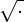
or |⋅|. Then we take care that there is no quantifier elimination
applied.
Simultaneous computation of several cases concerning certain expressions being zero or not has
been extensively investigated as dynamic evaluation [GD96, DR94a, DR94b, BGDW95].
It has also been extended to real closed fields [DGV96]. The idea behind the
development of these methods is of a more theoretical nature than to overcome the
problems with the interactive usage of CAS sketched above: one wishes to compute in
algebraic (or real) extension fields of the rationals. Guarded expressions occur naturally
when solving problems parametrically. Consider, e.g., the Gröbner systems used during
the computation of comprehensive Gröbner bases [Wei92].
The algorithms described in this paper are implemented in the REDUCE
package GUARDIAN. It is based on the REDUCE [Hea95, Mel95] package
REDLOG [DS97a, DS96] implementing a formula data type with corresponding
algorithms, in particular including simplification and quantifier elimination.
20.26.2 An outline of our method
Guarded expressions
A guarded expression is a scheme
where each γi is a quantifier-free formula, the guard, and each ti is an associated
conventional expression. The idea is that some ti is a valid interpretation iff γi holds.
Each pair (γi,ti) is called a case.
The first case (γ0,t0) is the generic case: t0 is the expression the system would compute
without our package, and γ0 is the corresponding guard.
The guards γi need neither exclude one another, nor do we require that they form a
complete case distinction. We shall, however, assume that all cases covered by a guarded
expression are already covered by the generic case; in other words:
Consider the following evaluation of |x| to a guarded expression:
Here the non-generic cases already cover the whole domain. The generic case is in some
way redundant. It is just present for keeping track of the system’s default behavior.
Formally we have
As an example for a non-redundant, i.e., necessary generic case we have the evaluation
of the reciprocal
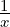
:
In every guarded expression, the generic case is explicitly marked as either necessary or
redundant. The corresponding tag is inherited during the evaluation process.
Unfortunately it can happen that guarded expressions satisfy (20.72) without being
tagged redundant, e.g., specialization of
to x = 0 if the system cannot evaluate sin(0). This does not happen if one claims for
necessary generic cases to have, as the reciprocal above, no alternative cases
at all. Else, in the sequel “redundant generic case” has to be read as “tagged
redundant.”
With guarded expressions, the evaluation splits into two independent parts:
Algebraic evaluation and a subsequent simplification of the guarded expression
obtained.
Guarding schemes
In the introduction we have seen that certain operators introduce case distinctions. For
this, with each operator f there is a guarding scheme associated providing information
on how to map f(t1,…,tm) to a guarded expression provided that one does not have to
care for the argument expressions t1, …, tm. In the easiest case, this is a rewrite
rule
The actual terms t1, …, tm are simply substituted for the formal symbols a1, …, am into
the generic guarded expression G(a1,…,am). We give some examples:
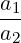 | → 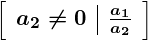 | |
|
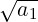 | → 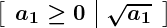 | |
|
| sign(a1) | → 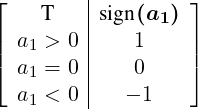 | |
|
| |a1| | → 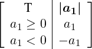 | (20.73) |
For functions of arbitrary arity, e.g., min or max, we formally assume infinitely many
operators of the same name. Technically, we associate a procedure parameterized with
the number of arguments m that generates the corresponding rewrite rule. As
min_scheme(2) we obtain, e.g.,
|
min(a1,a2) → 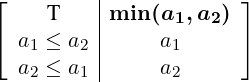 ,
|
while for higher arities there are more case distinctions necessary.
For later complexity analysis, we state the concept of a guarding scheme formally: a
guarding scheme for an m-ary operator f is a map
where E is the set of expressions, and GE is the set of guarded expressions. This allows
to split f(t1,…,tm) in dependence on the form of the parameter expressions t1,
…, tm.
Algebraic evaluation
Evaluating conventional expressions
The evaluation of conventional expressions into guarded expressions is performed
recursively: Constants c evaluate to
For the evaluation of f(e1,…,em) the argument expressions e1, …, em are recursively
evaluated to guarded expressions
Then the operator f is “moved inside” the ei′ by combining all cases, technically a
simultaneous Cartesian product computation of both the sets of guards and the sets of
terms:
This leads to the intermediate result
The new generic case is exactly the combination of the generic cases of the ei′. It is
redundant if at least one of these combined cases is redundant.
Next, all non-generic cases containing at least one redundant generic constituent γi0 in
their guard are deleted. The reason for this is that generic cases are only used to
keep track of the system default behavior. All other cases get the status of a
non-generic case even if they contain necessary generic constituents in their
guard.
At this point, we apply the guarding scheme of f to all remaining expressions
f(t1i1,…,tmim) in the form (20.76) yielding a nested guarded expression
which can be straightforwardly resolved to a guarded expression
This form is treated analogously to the form (20.76): The new generic case
(Γ0 ∧ δ00,u00) is redundant if at least one of  Γ0,f(t10,…,tm0)
Γ0,f(t10,…,tm0) and (δ00,u00) is
redundant. Among the non-generic cases all those containing redundant generic
constituents in their guard are deleted, and all those containing necessary generic
constituents in their guard get the status of an ordinary non-generic case.
and (δ00,u00) is
redundant. Among the non-generic cases all those containing redundant generic
constituents in their guard are deleted, and all those containing necessary generic
constituents in their guard get the status of an ordinary non-generic case.
Finally the standard evaluator of the system—reval in the case of REDUCE—is
applied to all contained expressions, which completes the algebraic part of the
evaluation.
Evaluating guarded expressions
The previous section was concerned with the evaluation of pure conventional expressions
into guarded expressions. Our system currently combines both conventional and guarded
expressions. We are thus faced with the problem of treating guarded subexpressions
during evaluation.
When there is a guarded subexpression ei detected during evaluation, all contained
expressions are recursively evaluated to guarded expressions yielding a nested guarded
expression of the form (20.77). This is resolved as described above yielding the
evaluation subresult ei′.
As a special case, this explains how guarded expressions are (re)evaluated to guarded
expressions.
Example
We describe the evaluation of the expression min(x,|x|). The first argument e1 = x
evaluates recursively to
with a necessary generic case. The nested x inside e2 = |x| evaluates to the same
form (20.78). For obtaining e2′, we apply the guarding scheme (20.73) of the absolute
value to the only term of (20.78) yielding
where the inner generic case is redundant. This form is resolved to
with a redundant generic case. The next step is the combination of cases by Cartesian
product computation. We obtain
which corresponds to (20.76) above. For the outer min, we apply the guarding
scheme (20.26.2) to all terms yielding the nested guarded expression
 , ,
|
which is in turn resolved to
 . .
|
From this, we delete the two non-generic cases obtained by combination with the
redundant generic case of the min. The final result of the algebraic evaluation step is the
following:
Worst-case complexity
Our measure of complexity |G| for guarded expressions G is the number of contained
cases:
As in Section 20.26.2, consider an m-ary operator f, guarded expression arguments e1′,
…, em′ as in equation (20.74), and the Cartesian product T as in equation (20.75).
Then
| |f(e1′,…,em′)| | ≤∑
(t1,…,tm)∈T |gschemef(t1,…,tm)| | |
|
| ≤ max(t1,…,tm)∈T |gschemef(t1,…,tm)|⋅ #T | |
|
| = max(t1,…,tm)∈T |gschemef(t1,…,tm)|⋅∏
j=1m|e
j′| | |
|
| ≤ max(t1,…,tm)∈T |gschemef(t1,…,tm)|⋅ max1≤j≤m|ej′| max1≤j≤m|ej′|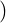 m. | | |
In the important special case that the guarding scheme of f is a rewrite rule
f(a1,…,am) → G, the above complexity estimation simplifies to
|f(e1′,…,em′)|≤|G|⋅∏
j=1m|e
j′|≤|G|⋅ max1≤j≤m|ej′| max1≤j≤m|ej′| m. m.
|
In other words: |G| plays the role of a factor, which, however, depends on f, and
|f(e1′,…,em′)| is polynomial in the size of the ei but exponential in the arity of
f.
Simplification
In view of the increasing size of the guarded expressions coming into existence with
subsequent computations, it is indispensable to apply simplification strategies.
There are two different algorithms involved in the simplification of guarded
expressions:
-
1.
- A formula simplifier mapping quantifier-free formulas to equivalent simpler
ones.
-
2.
- Effective quantifier elimination for real closed fields over the language of
ordered rings.
It is not relevant, which simplifier and which quantifier elimination procedure is actually
used. We use the formula simplifier described in [DS97b]. Our quantifier elimination
uses test point methods developed by Weispfenning [Wei88, RLW93, Wei97]. It is
restricted to formulas obeying certain degree restrictions wrt. the quantified variables.
As an alternative, REDLOG provides an interface to Hong’s QEPCAD quantifier
elimination package [HCJE93]. Compared to the simplification, the quantifier
elimination is more time consuming. It can be turned off by a switch.
The following simplification steps are applied in the given order:
Contraction of cases
This is restricted to the non-generic cases of the considered guarded expression. We
contract different cases containing the same terms:
|
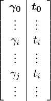 becomes 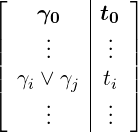 .
|
Simplification of the guards
The simplifier is applied to all guards replacing them by simplified equivalents. Since our
simplifier maps γ ∨ γ to γ, this together with the contraction of cases takes care for the
deletion of duplicate cases.
Keep one tautological case
If the guard of some non-generic case becomes “T,” we delete all other non-generic
cases. Else, if quantifier elimination is turned on, we try to detect a tautology by
eliminating the universal closures ∀γ of the guards γ. This quantifier elimination is also
applied to the guards of generic cases. These are, in case of success, simply replaced by
“T” without deleting the case.
Remove contradictive cases
A non-generic case is deleted if its guard has become “F.” If quantifier elimination is
turned on, we try to detect further contradictive cases by eliminating the existential
closure ∃γ for each guard γ. This quantifier elimination is also applied to generic cases.
In case of success they are not deleted but their guards are replaced by “F.” Our
assumption (20.71) allows then to delete all non-generic cases.
Example revisited
We turn back to the form (20.79) of our example min(x,|x|). Contraction of cases with
subsequent simplification automatically yields
of which only the tautological non-generic case survives:
Output modes
An output mode determines which part of the information contained in the guarded
expressions is provided to the user. GUARDIAN knows the following output
modes:
Matrix
Output matrices in the style used throughout this paper. We have already seen that these
can become very large in general.
Generic case
Output only the generic case.
Generic term
Output only the generic term. Thus the output is exactly the same as without the
guardian package. If the condition of the generic case becomes “F,” a warning
“contradictive situation” is given. The computation can, however, be
continued.
Note that output modes are restrictions concerning only the output; internally the system
still computes with the complete guarded expressions.
A smart mode
Consider the evaluation result (20.80) of min(x,|x|). The generic term output mode
would output min(x,|x|), although more precise information could be given, namely x.
The problem is caused by the fact that generic cases are used to keep track of the
system’s default behavior. In this section we will describe an optional smart mode with a
different notion of generic case. To begin with, we show why the problem can not be
overcome by a “smart output mode.”
Assume that there is an output mode which outputs x for (20.80). As the next
computation involving (20.80) consider division by y. This would result in
Again, there are identic conditions for the generic case and some non-generic case, and,
again, the term belonging to the latter is simpler. Our mode would output
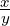
. Next, we
apply the absolute value once more yielding
Here, the condition of the generic case differs from all other conditions. We thus
have to output the generic term. For the user, the evaluation of |
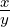
| results in
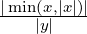
.
The smart mode can turn a non-generic case into a necessary generic one dropping the
original generic case and all other non-generic cases. Consider, e.g., (20.80), where the
conditions are equal, and the non-generic term is “simpler.”
In fact, the relevant relationship between the conditions is that the generic condition
implies the non-generic one. In other words: Some non-generic condition is not more
restrictive than the generic condition, and thus covers the whole domain of the guarded
expression. Note that from the implication and (20.71) we may conclude that the cases
are even equivalent.
Implication is heuristically checked by simplification. If this fails, quantifier elimination
provides a decision procedure. Note that our test point methods are incomplete in this
regard due to the degree restrictions. Also it cannot be applied straightforwardly
to guards containing operators that do not belong to the language of ordered
rings.
Whenever we happen to detect a relevant implication, we actually turn the corresponding
non-generic case into the generic one. From our motivation of non-generic cases, we may
expect that non-generic expressions are generally more convenient than generic
ones.
20.26.3 Examples
We give the results for the following computations as they are printed in the output mode
matrix providing the full information on the computation result. The reader can derive
himself what the output in the mode generic case or generic term would be.
- Smart mode or not:
|
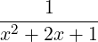 = 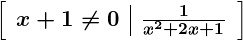 .
|
The simplifier recognizes that the denominator is a square.
- Smart mode or not:
|
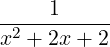 = 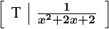 .
|
Quantifier elimination recognizes the positive definiteness of the
denominator.
- Smart mode:
|x|− = = 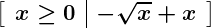 .
|
The square root allows to forget about the negative branch of the absolute
value.
- Smart mode:
|
|x2 + 2x + 1| = 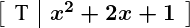 .
|
The simplifier recognizes the positive semidefiniteness of the argument.
REDUCE itself recognizes squares within absolute values only in very special
cases such as |x2|.
- Smart mode:
min x,max(x,y) x,max(x,y) = = 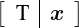 .
|
Note that REDUCE does not know any rules about nested minima and
maxima.
- Smart mode:
|
min 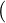 sign(x),−1 = = 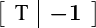 .
|
- Smart mode or not:
This example is taken from [DF94].
- Smart mode or not:
The Motzkin polynomial is recognized to be positive semidefinite by
quantifier elimination.
The evaluation time for the last example is 119 ms on a SUN SPARC-4. This illustrates
that efficiency is no problem with such interactive examples.
20.26.4 Outlook
This section describes possible extensions of the GUARDIAN. The extensions
proposed in Section 20.26.4 on simplification of terms and Section 20.26.4
on a background theory are clear from a theoretical point of view but not yet
implemented. Section 20.26.4 collects some ideas on the application of our ideas
to the REDUCE integrator. In this field, there is some more theoretical work
necessary.
Simplification of terms
Consider the expression sign(x)x −|x|. It evaluates to the following guarded
expression:
This suggests to substitute −x by 0 in the third case, which would in turn allow to
contract the two non-generic cases yielding
In smart mode second case would then become the only generic case.
Generally, one would proceed as follows: If the guard is a conjunction containing as
toplevel equations
reduce the corresponding expression modulo the set of univariate linear polynomials
among t1, …, tk.
A more general approach would reduce the expression modulo a Gröbner basis of all
the t1, …, tk. This leads, however, to larger expressions in general.
One can also imagine to make use of non-conjunctive guards in the following
way:
-
1.
- Compute a DNF of the guard.
-
2.
- Split the case into several cases corresponding to the conjunctions in the
DNF.
-
3.
- Simplify the terms.
-
4.
- Apply the standard simplification procedure to the resulting guarded
expression. Note that it includes contraction of cases.
According to experiences with similar ideas in the “Gröbner simplifier” described
in [DS97b], this should work well.
Background theory
In practice one often computes with quantities guaranteed to lie in a certain range. For
instance, when computing an electrical resistance, one knows in advance that it will not
be negative. For such cases one would like to have some facility to provide external
information to the system. This can then be used to reduce the complexity of the guarded
expressions.
One would provide a function assert(φ), which asserts the formula φ to hold.
Successive applications of assert establish a background theory, which is a
set of formulas considered conjunctively. The information contained in the
background theory can be used with the guarded expression computation. The
user must, however, not rely on all the background information to be actually
used.
Technically, denote by Φ the (conjunctive) background theory. For the simplification of
the guards, we can make use of the fact that our simplifier is designed to simplify wrt. a
theory, cf. [DS97b]. For proving that some guard γ is tautological, we try to
prove
instead of ∀γ. Similarly, for proving that γ is contradictive, we try to disprove
Instead of proving ∀(γ1→γ2) in smart mode, we try to prove
∀ (Φ ∧ γ1)→γ2 (Φ ∧ γ1)→γ2 . .
|
Independently, one can imagine to use a background theory for reducing the output with
the matrix output mode. For this, one simplifies each guard wrt. the theory at the
output stage treating contradictions and tautologies appropriately. Using the
theory for replacing all cases by one at output stage in a smart mode manner
leads once more to the problem of expressions or even guarded expressions
“mysteriously” getting more complicated. Applying the theory only at the output stage
makes it possible to implement a procedure unassert(φ) in a reasonable
way.
Integration
CAS integrators make “mistakes” similar to those we have examined. Consider, e.g., the
typical result
It does not cover the case a = −1, for which one wishes to obtain
This problem can also be solved by using guarded expressions for integration
results.
Within the framework of this paper, we would have to associate a guarding scheme to the
integrator int. It is not hard to see that this cannot be done in a reasonable way without
putting as much knowledge into the scheme as into the integrator itself. Thus
for treating integration, one has to modify the integrator to provide guarded
expressions.
Next, we have to clarify what the guarded expression for the above integral would look
like. Since we know that the integral is defined for all interpretations of the variables, our
assumption (20.71) implies that the generic condition be “T.” We obtain the guarded
expression
Note that the redundant generic case does not model the system’s current behavior.
Combining algebra with logic
Our method, in the described form, uses an already implemented algebraic evaluator. In
the previous section, we have seen that this point of view is not sufficient for treating
integration appropriately.
Also our approach runs into trouble with built-in knowledge such as
| = |x|, | (20.81)
|
| sign(|x|) | = 1. | (20.82) |
Equation (20.81) introduces an absolute value operator within a non-generic term
without making a case distinction. Equation (20.82) is wrong when not considering x
transcendental. In contrast to the situation with reciprocals, our technique cannot be used
to avoid this “mistake.” We obtain
yielding two different answers for x = 0.
We have already seen in the example Section 20.26.3 that the implementation of
knowledge such as (20.81) and (20.82) is usually quite ad hoc, and can be
mostly covered by using guarded expressions. This observation gives rise to the
following question: When designing a new CAS based on guarded expressions, how
should the knowledge be distributed between the algebraic side and the logic
side?
20.26.5 Conclusions
Guarded expressions can be used to overcome well-known problems with interpreting
expressions as terms. We have explained in detail how to compute with guarded
expressions including several simplification techniques. Moreover we gain algebraic
simplification power from the logical simplifications. Numerous examples illustrate the
power of our simplification methods. The largest part of our ideas is efficiently
implemented, and the software is published. The outlook on background theories and on
the treatment of integration by guarded expressions points on interesting future
extensions.